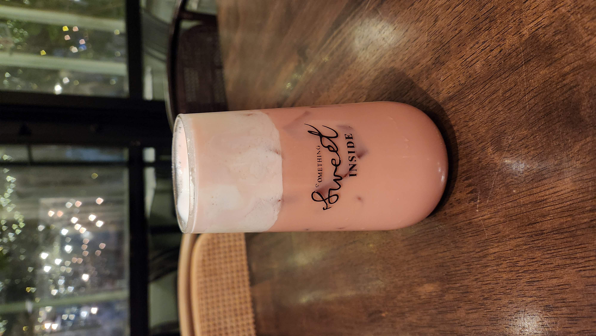

If you have toppings, get the wider straw. If you do not have toppings, get the thinner straw.
Step 2:
Take a picture of your drink. (Optional)
You can show off your drink to your friends. :)

Step 3:
If your drink has layers, mix your drink. (Optional)
If your lid is a plastic film, you can swirl your drink upside-down to thoroughly mix it. If your lid is a plastic cover, you can swirl your drink left and right to mix it.
Step 4:
Take the straw out of the wrapper and poke the pointy end through the top of your drink.
If your lid is a plastic film, you can stab the straw through the plastic. If your lid is a plastic cover, you can poke the straw through the hole.